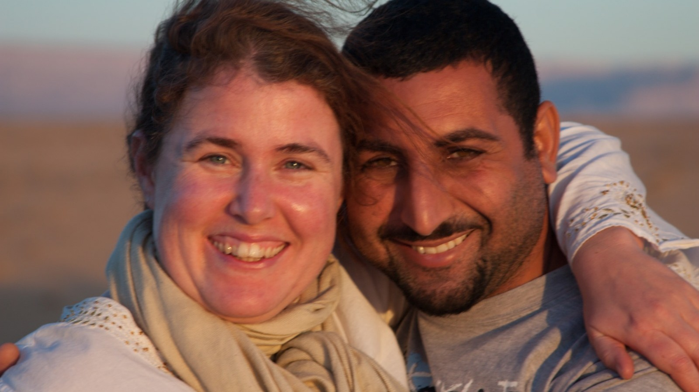

Die Menschen hinter Desert & River
Ein gemeinsames Leben, geprägt von Geschichte, Fürsorge und der Wüste. Lesen Sie Annets Geschichte, unseren gemeinsamen Weg und Josephs Werdegang.

Geschichte stand nie nur in Büchern
Ich wurde 1974 in den Niederlanden geboren, in ein Zuhause voller Bücher, Geschichten und einer tiefen Liebe zur Geschichte. Während andere Kinder spielten, faszinierte mich etwas, das für die meisten Menschen unsichtbar blieb: die Vorstellung, dass unter unseren Füßen ganze Welten lagen.
Römer. Mittelalterliche Dörfer. Prähistorische Stämme. Zeitschichten, die still im Boden ruhten. Wer grub, fand vielleicht eine Münze, eine Tonscherbe, ein Stück aus dem Leben eines Menschen vor Jahrhunderten.
Wenn meine Lehrer fragten, was ich werden wollte, antwortete ich ohne zu zögern: Archäologin.
Den Beruf verstand ich noch nicht ganz, aber ich verstand das Staunen. Ich verstand Schätze. Ich verstand den Zauber, Geschichten freizulegen, die die Zeit begraben hatte.
Meine Mutter unterstützte diesen Traum. Sie schenkte mir ein Buch über Archäologie in den Niederlanden, voller Fotos von Funden aus der Erde. Besonders faszinierten mich die alten Steingräber im Norden, die Hunebedden: gewaltige Steine, die vor Tausenden von Jahren aufgestellt wurden. Früher glaubte man, Riesen hätten sie gebaut. Tatsächlich sind es 5.000 Jahre alte Grabkammern. Sie stehen noch immer in der offenen Landschaft, stille Zeugen einer fernen Vergangenheit.
Geschichte war nicht nur etwas in Büchern. Sie lebte.
Gleichzeitig entdeckte ich eine weitere Leidenschaft: Sprachen. Worte fielen mir leicht, und mit ihnen kam die Sehnsucht nach fernen Orten. Das Reisen rief mich. Nach meinem Geschichtsstudium traf ich deshalb eine praktische, aber abenteuerliche Entscheidung: Ich wurde Übersetzerin. Das war lange bevor jemand von digitalen Nomaden sprach, aber ich träumte schon von einem Leben ohne Grenzen. Wenn ich übersetzen konnte, konnte ich überall auf der Welt arbeiten.
Und dann kam Ägypten
Auf einer Reise mit meinem Bruder und meiner Schwägerin besuchte ich Dahab. Eines Abends fuhren wir in die Wüste. Wir aßen unter einem endlosen Himmel. Die Stille war gewaltig. Die Sterne schienen zum Greifen nah. In dieser Nacht veränderte sich etwas in mir. Zwei Nächte in der Wüste waren nicht genug.
Also buchten wir eine längere Tour mit einem einheimischen Wüstenguide: Joseph.
Wir reisten tief in den Sinai, zum alten Hathor-Tempel von Serabit el-Khadim, einem Ort, den nur wenige Besucher je sehen. Dort, mitten in der Wüste, umgeben von Ruinen, älter als man es sich vorstellen kann, geschah etwas Außergewöhnliches.
Wir verliebten uns. Am Tempel der Hathor, der altägyptischen Göttin der Liebe. Es fühlte sich fast an, als stünde es in den Steinen geschrieben.
Als ich in die Niederlande zurückkehrte, blieb mein Herz nicht dort. Ich kam zurück nach Ägypten: zu Joseph, zur Wüste, zur Geschichte, die in den Bergen des Sinai verborgen liegt.
Wir entdeckten, dass wir dieselbe Leidenschaft teilten: eine tiefe Liebe zur Geschichte und zur stillen Kraft der Wüste. Und je mehr wir erkundeten, desto mehr erkannten wir etwas Überraschendes: Nur sehr wenige Menschen kannten die Geschichte des Sinai wirklich. Seine alten Handelswege. Seine Tempel. Seine Inschriften. Seine vergessenen Geschichten.
Also beschlossen wir, das zu ändern.
Wir begannen zu forschen, zu studieren und die Wege selbst zu gehen. Wir wollten nicht einfach Wüstentouren anbieten. Wir wollten Reisen durch die Zeit anbieten. An alten Orten stehen und die wahren Geschichten erzählen. Menschen fühlen lassen, was wir fühlten: dass Geschichte nicht tot ist. Sie wartet.
Und so begann unser gemeinsames Leben: mit Liebe, mit Geschichte und mit der Wüste als Zeugin.

Reisen jenseits des Gewöhnlichen
Wir haben uns in der Wüste kennengelernt, am Hathor-Tempel im Sinai, wo Joseph eine Tour leitete, die ich mit meinem Bruder und meiner Schwägerin machte. Keiner von uns ahnte damals, dass diese Begegnung den Rest unseres Lebens prägen würde.
Diese Reise brachte uns nicht nur zusammen, sondern weckte auch eine tiefe Liebe zur Wüste und ihrer verborgenen Geschichte. Mit der Zeit wurde aus der gemeinsamen Faszination ein gemeinsames Leben und schließlich eine neue Art zu führen.
Aus diesem Gefühl ist Desert & River entstanden: dem Wunsch, Reisen mit mehr Zeit, mehr Wahrheit, mehr Fürsorge für Tiere und mehr Respekt vor dem Land selbst anzubieten.
Joseph hatte seinen eigenen Weg bereits begonnen. 2005 gründete er mit seinem Bruder Bob King Safari. 2008 kam seine Frau Irina dazu und half, das Unternehmen weiter aufzubauen. Im selben Jahr kam auch Annet, und zu viert gestalteten wir King Safari gemeinsam. Mit Leidenschaft, harter Arbeit und unzähligen Tagen in den Bergen und Tälern des Sinai wuchs das Unternehmen.
2011 kam die Revolution und mit ihr Unsicherheit und Herausforderungen. Aber wir blieben. Wir glaubten an die Wüste und an das, was wir aufbauten. 2015 gründeten wir zu viert außerdem das Sababa Hotel, und 2020 eröffneten wir das Lidia Hotel. Wir wuchsen weiter, immer gemeinsam.
2025 veränderte sich etwas in uns. Joseph und Annet sehnten sich wieder nach etwas Persönlicherem. Wir lieben beide die Wüste zutiefst: unter den Sternen sein, durch die Stille gehen, die Tiere beobachten. Wir lieben alle Tiere: Katzen, Hunde, Kamele. Und wir begannen, gründlich darüber nachzudenken, wie Wüstentouren eigentlich gemacht werden sollten.
Zu oft werden Kamele mit Wasser, Campingausrüstung und schwerem Gepäck überladen, nur um die Kosten für ein Begleitfahrzeug zu sparen. Das mag romantisch aussehen, ist aber hart für die Tiere. Für uns steht das Wohl der Tiere an erster Stelle. Auf unseren Reisen mit Desert and River haben wir immer ein Begleitfahrzeug dabei, das Ausrüstung, Essen, Wasser und Campingsachen transportiert. Die Kamele tragen nur leichte Decken, damit die Gäste bequem sitzen können. Wenn wir mit Kamelen reisen, bringen wir sogar gutes Futter für sie mit.
Und natürlich bringen wir auch für uns wunderbares Essen mit. Jeden Abend kochen wir über dem offenen Feuer etwas Besonderes. Wir backen Pizza, verschiedene Brotsorten und Desserts wie Bananensplit und Apple Crumble. Ständig erfinden wir neue Rezepte, die sich in der Wüste zubereiten lassen. Gemeinsame Mahlzeiten unter den Sternen gehören zum Zauber dazu.
Wir besuchen bekannte Orte, wenn Gäste das möchten, etwa den Coloured Canyon und den Arada Canyon, aber wir hetzen nicht. Wir packen den Coloured Canyon, den White Canyon bei Hodra, den Arada Canyon, den Mushroom Stone und alles andere nicht in einen gehetzten Tag mit zehn Minuten hier und fünf Minuten dort. Wir nehmen uns Zeit. Wir betrachten Inschriften. Wir spüren die Stille. Wir schlafen unter den Sternen. Wir lassen die Wüste erleben, nicht konsumieren.
Wir sprechen auch: über das Leben der Beduinen, den ägyptischen Alltag, Traditionen, Geschichte und die heutige Realität. Gäste, die während eines zweiwöchigen Urlaubs drei Tage mit uns verbringen, erzählen uns oft, dass diese drei Tage der bedeutendste Teil ihrer ganzen Reise waren. Sie haben mehr gelernt, mehr gesehen und tiefer erlebt als an allen anderen Tagen zusammen.
2026 haben wir schließlich gemeinsam Desert and River gegründet, ein Spiegel all dessen, woran wir glauben. Unsere Reisen handeln von Wahrheit, vom Geburtsort des Alphabets, von 5.000 Jahre alten Gräbern und 12.000 Jahre alter Höhlenkunst, aber auch von Fürsorge, Zeit, Verbundenheit und Liebe zu diesem außergewöhnlichen Land.
Wir geben den Menschen einfach, was wir haben: unsere Liebe zur Wüste, unseren Respekt vor ihren Tieren, unsere Leidenschaft für Geschichte und den stillen Zauber, unter einem Himmel voller Sterne zu schlafen.
Wir arbeiten mit Genehmigungen, nach den Vorschriften, versichert und mit Sorgfaltspflicht, und wir planen mit großzügiger Vorbereitung: Fahrzeuge, Treibstoff, Essen, Wasser und Notfallreserven gehören immer zu verantwortungsvoller Arbeit in der Wüste.

Von verborgenen Ruinen in die Stille der Wüste
Ich wurde im März 1977 in einem kleinen Dorf bei Sohag geboren. Schon als kleiner Junge, vielleicht drei oder vier Jahre alt, war meine Welt voller Geheimnisse.
Direkt unter unserer Dorfkirche lag eine verborgene Welt altägyptischer und frühchristlicher Geschichte. Meine Freunde und ich schlichen oft hinein, um zu spielen, obwohl die Älteren uns immer warnten, fernzubleiben.
Ich glaube, dort begann meine Liebe zur Geschichte wirklich: in den dunklen Schatten dieser Ruinen.
Doch als ich sechs oder sieben war, hörte das Spielen auf. Ich begann in einer Metallfabrik zu arbeiten. Es war schwere, mechanische Arbeit, zu schwer für ein Kind, aber gerade diese Fabrik lehrte mich, das Lesen zu lieben. Ich hasste das Fett und die harte Arbeit so sehr, dass ich wusste: Die Schule war mein einziger Ausweg.
Der Traum für 65 Piaster
Ich war besessen von Büchern. Wenn ich meine Schulbücher durchhatte, wollte ich mehr. Damals verdiente ich in der Fabrik 25 Piaster pro Woche. Mein Vater gab mir an unserem freien Tag 5 Piaster dazu, also hatte ich 30 Piaster für die ganze Woche.
Die meisten Kinder hätten Süßigkeiten gekauft, aber ich sparte jede Münze. Wenn ich zwei Wochen sparte, konnte ich mir endlich ein dickes Buch für 60 oder 65 Piaster leisten. Ich brauchte eine ganze Woche, um es zu lesen, und diese Seiten waren mein eigentliches Zuhause.
Vom Zimmerservice nach Dahab
Irgendwann ging ich nach Kairo. Ich machte alle möglichen Jobs und suchte meinen Weg. Eines Tages traf ich jemanden, der sagte: „Komm nach Dahab arbeiten.“ Ich wusste nicht einmal, was Dahab war. Aber ich probierte gern Neues aus.
Ich fing ganz unten an, im Housekeeping auf einem Campingplatz. Von dort arbeitete ich mich zum Rezeptionisten hoch und wurde schließlich Manager. Beruflich reiste ich überall hin, nach Kairo, Luxor und Assuan, und lernte jeden Bereich der Tourismusbranche kennen.
Die Wüste finden, und Annet
2005 kam mein Bruder Bob dazu, und wir wagten den Sprung in ein eigenes Unternehmen. Wir begannen, Touren in die Wüste zu führen. Ich verliebte mich in die Stille dort.
Die meisten Menschen ahnen nicht, wie reich der Sinai ist: Er birgt Geschichte von der Steinzeit bis zu den allerersten Alphabeten. Es ist ein stiller, uralter Ort, der zu einem spricht.
Auf einer dieser Wüstentouren lernte ich Annet kennen. Wir verliebten uns, und damit begann unsere eigentliche gemeinsame Reise.
Wenn ich auf den Jungen in der Metallfabrik zurückblicke, wird mir klar, dass jeder gesparte Piaster und jedes gelesene Buch mich genau hierher geführt hat: in die Stille der Wüste und zu einem Leben, das ich mit meinen eigenen Händen aufgebaut habe.
Wir hetzen nicht durch die Wüste.
Stille, Hitze, holprige Fahrten und Einfachheit gehören zur Realität. Wir romantisieren das nicht, wir respektieren es.
Was wir schützen, wenn wir führen
Empfindliche Natur
Wir begrenzen bewusst den Zugang, halten Gruppen klein und organisieren bei Bedarf Aufräumaktionen.
Beziehungen zu den Beduinen
Wir reisen mit Erlaubnis, nicht aus Anspruch, und wir geben materiell und respektvoll etwas zurück.
Ein ehrliches Erlebnis
Keine täglichen Abfahrten, kein Spektakel. Präsenz und Zuhören stehen an erster Stelle.
Sicherheit und Sorgfaltspflicht
Genehmigungen, Planung und großzügige Vorbereitung sind nicht verhandelbar.
Beginnen Sie mit einem Gespräch
Erzählen Sie uns von Ihrem Zeitrahmen, Ihren Interessen und Ihrem Reisestil. Wir beraten Sie, was realistisch, respektvoll und lohnenswert ist.
Desert & River
Reisen Sie tiefer in den Sinai, mit individuellen Reisen, kulturellen Einblicken und echter Verbindung vor Ort.